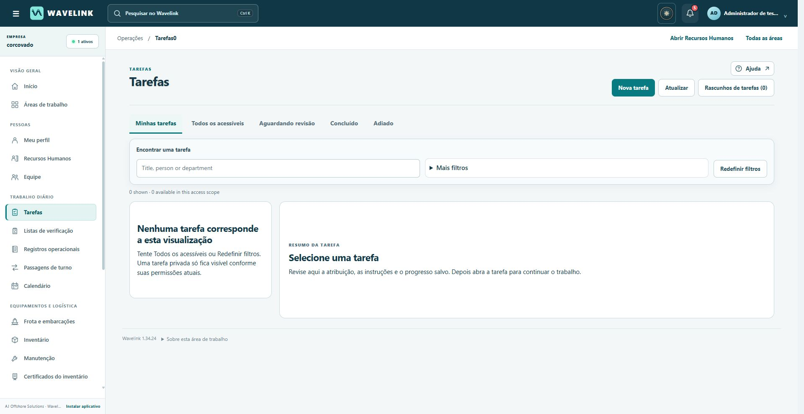
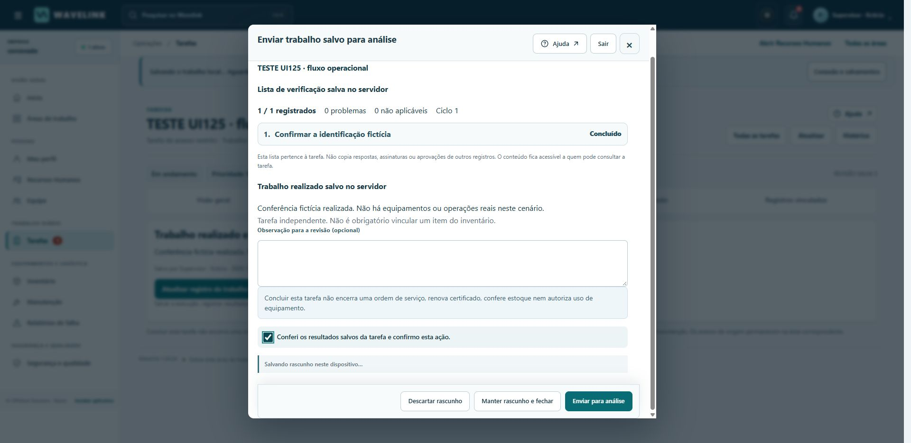
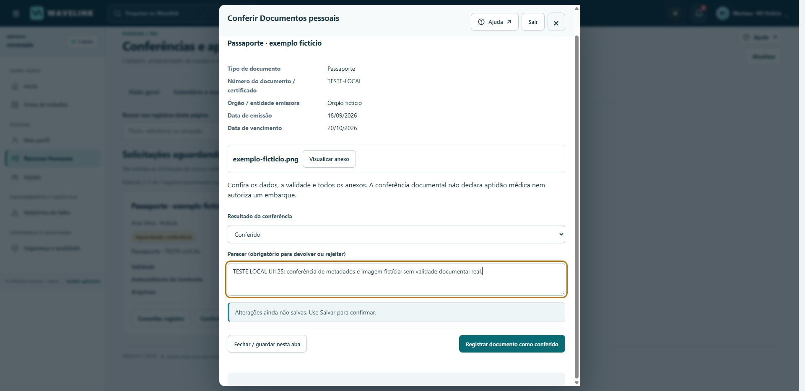
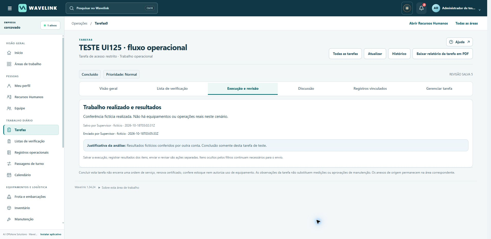
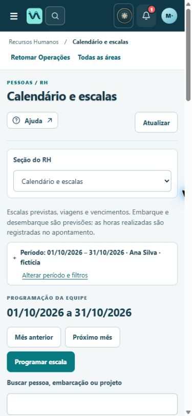

AJ OFFSHORE SOLUTIONS · WAVELINK · UI125 / 1.34.25
Português profissional e ações mais claras
Ampliação da linguagem da interface e revisão dos fluxos de RH e Operações, preservando o sistema visual da UI124 e os recursos originais do Wavelink.
O que esta entrega comprova162 verificações automatizadas aprovadas, jornadas no Chrome com quatro perfis fictícios e reconstrução completa conferida por hash. A publicação e o commit ativo são registrados no comprovante de publicação separado.
A revisão integral ainda tem pendências. O navegador continua bloqueando a interface autenticada da Corcovado. A cobertura linguística de caminhos avançados de importação, conferência de fontes e erros raros ainda não está certificada. Estes limites não foram tratados como testes aprovados.
Mudanças implementadas
- 1.457 entradas de vocabulário revisadas nesta etapa; dicionário total de 4.311 entradas. São textos definidos pelo aplicativo, não substituições em nomes, documentos ou dados de usuários.
- Ações distintas para salvar sem enviar, apresentar uma despesa, enviar apontamentos, devolver, rejeitar e aprovar. A decisão começa sem opção pré-selecionada. Devolução e rejeição exigem justificativa.
- Dados, validade e anexos no formulário de conferência documental. O RH consulta o arquivo e decide na mesma tela, com os controles privados já existentes.
- Textos de tarefas, manutenção, inventário, Frota, remessas, passagens de turno, salvamentos, calendários e recuperação de senha ampliados em português.
- Situações do calendário aparecem como estados, por exemplo “Em aberto”. Datas e filtros explicam sua abrangência. A navegação não incorpora contadores ocultos ao nome da área.
- Correção de uma classificação técnica de exclusões: o método HTTP DELETE permanece técnico para que os comprovantes e proteções de salvamento funcionem em português.
- Atualização das versões dos arquivos da interface e do cache público; as exclusões de APIs e arquivos privados do cache foram preservadas.
Antes e depois

Antes: captura real da interface anterior, em teste isolado.
Depois: enviar para análise é uma ação explícita, separada do salvamento e da conclusão.
Documento fictício: metadados e anexo junto da decisão. A conferência não declara aptidão médica nem autoriza embarque.
Jornada completa: criação → execução → envio → revisão por outra conta → conclusão.
Calendário de RH em 390 × 844. Capturas usam apenas dados fictícios e não comprovam o site de produção. Algumas foram obtidas antes da atualização do número da versão.Exemplos de significado
| Ação | Resultado e próximo passo |
|---|
| Salvar sem enviar para análise | Preserva as alterações. Não envia nem aprova; o registro devolvido conserva sua situação até o reenvio. |
| Registrar documento como conferido | Registra a análise documental. Não comprova aptidão médica ou autorização de embarque. |
| Aprovar apontamento de horas | Registra a decisão sobre as horas apresentadas. Não calcula folha de pagamento. |
| Aprovar reembolso | Registra aprovação do pedido. Não executa nem comprova pagamento. |
| Registrar recebimento físico | Registra a chegada dos volumes selecionados. Não libera quarentena nem autoriza uso. |
| Concluir tarefa após revisão | Conclui aquela tarefa com o parecer do revisor. Não encerra ordens ou falhas vinculadas. |
Glossário adotado
| Termo | Uso no Wavelink |
|---|
| Cadastro de colaboradores / lotação | Cadastro reúne dados profissionais. Lotação indica vínculo organizacional; não é sinônimo de local temporário ou embarcação. |
| Escala planejada / jornada / apontamento | Escala organiza períodos previstos. Jornada é o período de trabalho aplicável. Apontamento registra as horas informadas, sujeitas à análise; não é folha de pagamento. |
| Embarque e desembarque | Início e término previstos do período embarcado. A programação não comprova presença física. |
| Afastamento / disponibilidade | Afastamento é uma situação informada. Ausência de escala não significa disponibilidade confirmada. |
| Gestão documental / vencimento / conferência | Arquivo enviado, prazo de validade e resultado da conferência são informações distintas. |
| Prestação de contas / despesa / reembolso | A prestação de contas reúne informações e comprovantes. A despesa apresentada passa por análise. Reembolso aprovado não é pagamento registrado. |
| CIR, CBSP e HUET | Caderneta de Inscrição e Registro; Curso Básico de Segurança de Plataforma; treinamento de escape de helicóptero submerso. Siglas setoriais mantidas com explicação. |
Referências profissionais consultadas
As adaptações ao Wavelink são decisões de projeto, orientadas por documentação oficial, sem copiar a identidade visual dos fornecedores.
Testes e limites
Automação: 93 verificações JavaScript, 17 de RH em Python e 52 de relatórios/calendário. As falhas iniciais de contratos legados e configuração de testes foram corrigidas e verificadas novamente. A reconstrução valida 2.276 recursos.
No Chrome local: correção e reenvio de horas; aprovação por outra conta; despesa em rascunho, envio e aprovação; rejeição com justificativa; bloqueio de decisão sem justificativa; visualização privada de anexo e conferência documental; execução e revisão de tarefa; proteção de rascunhos de outra conta; calendário e navegação móvel. Nas telas móveis verificadas, não houve rolagem horizontal da página. O foco por teclado ficou visível e não foram registrados erros no console da sessão verificada.
Esses testes não equivalem a uma auditoria integral de acessibilidade, teste em aparelhos físicos ou medição de produtividade. Não foi enviada mensagem a terceiros.
Preservação, inglês intencional e reversão
Mesmo serviço, disco, banco, usuários, permissões e dados. Nenhuma limpeza de produção ou migração de dados foi executada. O usuário teste-rh-ui121-2 permanece conforme solicitado.
Inglês intencional: Wavelink/AJ Offshore Solutions, nomes de produtos, siglas reconhecidas, conteúdo escrito pelos usuários, nomes de arquivos, referências originais, identificadores de API/permissões e formatos técnicos. Outros ambientes mantêm seu idioma. Textos de caminhos avançados ainda não revisados não são considerados “intencionais”: permanecem como pendência de cobertura.
Backup prévio verificado em /var/data/wavelink-release-backups/20261018T031149Z-before-ui125, proprietário UID 10001, integridade SQLite OK, zero violações de chave estrangeira e arquivo compactado conferido. Os processos permaneceram ativos: esta atualização altera apresentação e validação do formulário, sem migrar dados.
Reversão: republicar 19d16b367143ec6e8d81b4bb5a8d98c4df2168e2 no mesmo serviço. Não restaurar o banco apenas para reverter a interface. Uma restauração de dados exigiria parar os processos de escrita e avaliação separada.
Pendências: validação autenticada no domínio Corcovado, cobertura linguística dos caminhos avançados citados e testes/limpeza de registros antigos de produção. O bloqueio do navegador não foi contornado.
Proveniência e hashes · Validação detalhada · Aplicativo Corcovado